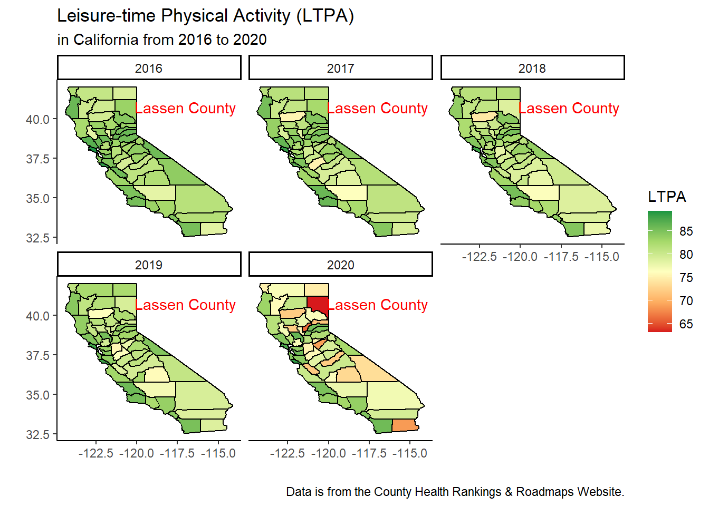
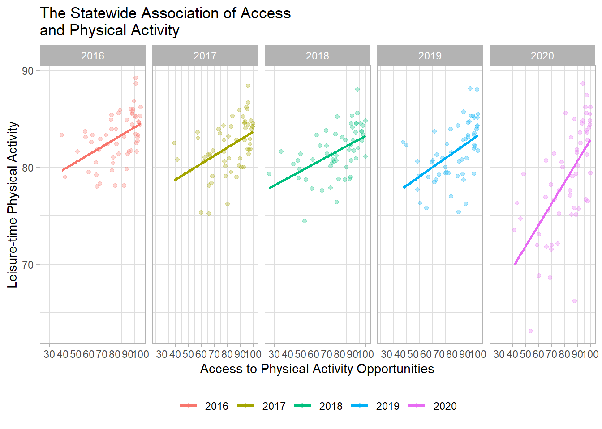
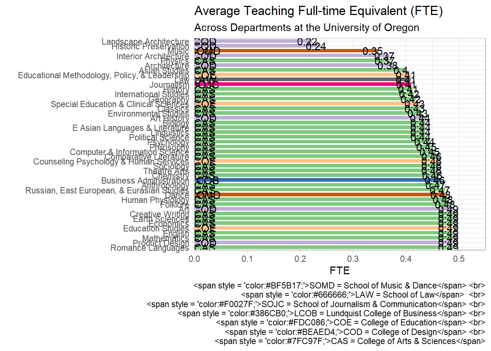
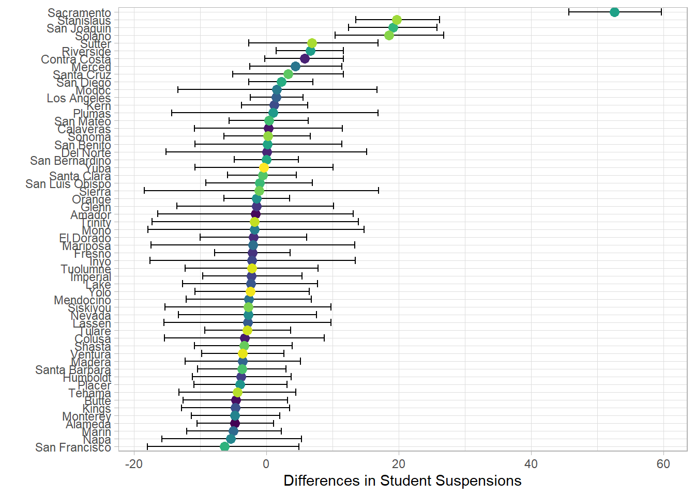
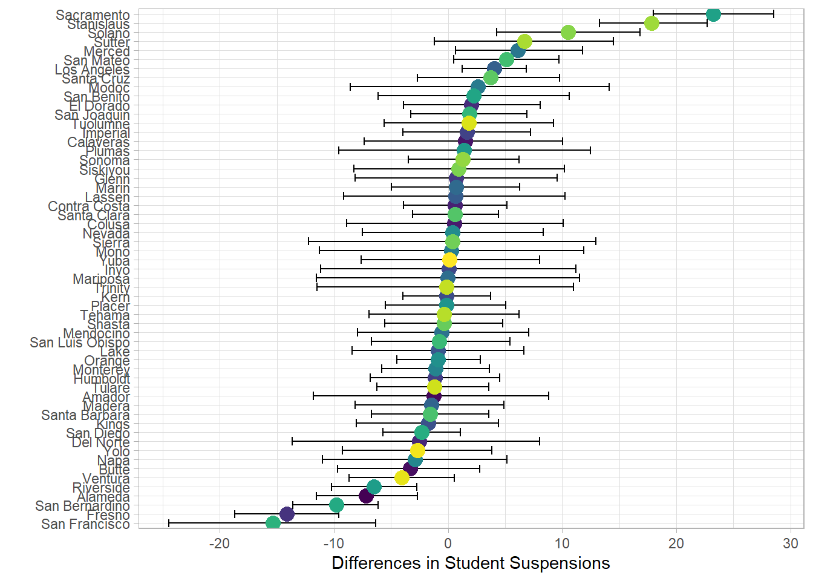
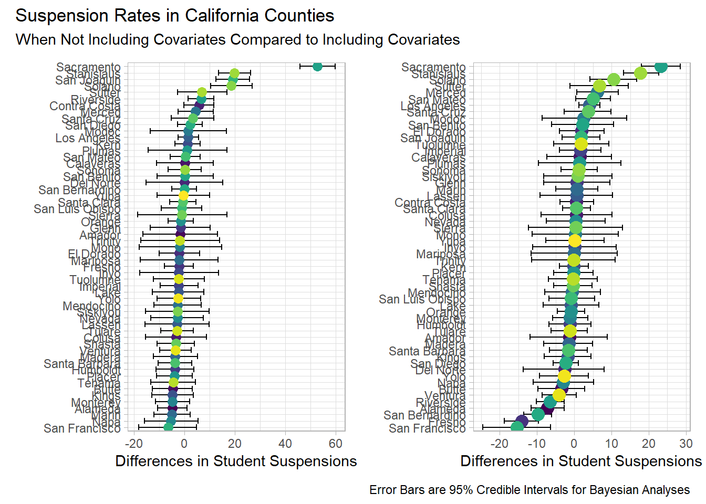

Code
library(tidyverse)
cat_map <- purrr::map
options(max.print = 99999)
options(scipen = 999)
theme_set(theme_light())library(tidyverse)
cat_map <- purrr::map
options(max.print = 99999)
options(scipen = 999)
theme_set(theme_light())county_icc_2level <- function(multi_model){
between <- multi_model$vcov[1]
total <- multi_model$vcov[1] + multi_model$vcov[2]
between/total
}
counties <- function(years){
link <- glue::glue("https://raw.githubusercontent.com/jpedroza1228/dissertation/master/final_data/county{years}_sub.csv")
rio::import(link, setclass = "tibble")
}
county <- map_df(16:20, ~counties(.x))county <- county |>
dplyr::select(
rowid,
state_fips_code:release_year,
poor_or_fair_health:access_to_exercise_opportunities,
preventable_hospital_stays,
some_college:driving_alone_to_work,
food_insecurity:uninsured_children,
median_household_income:percent_rural
) |>
rename(
year = release_year,
state = state_abbreviation
) |>
mutate(
phyact_percent = (physical_inactivity*100),
ltpa_percent = (100 - phyact_percent)
) |>
rename(
access_pa = access_to_exercise_opportunities
) |>
mutate(
smoking_percent = adult_smoking*100,
obesity_percent = adult_obesity*100,
access_pa_percent = access_pa*100,
college_percent = some_college*100,
unemployment_percent = unemployment*100,
driving_alone_percent = driving_alone_to_work*100,
percent_65plus = percent_65_and_older*100,
latino_percent = percent_hispanic*100,
rural_percent = percent_rural*100
) |>
dplyr::select(
-c(
adult_smoking,
adult_obesity,
access_pa,
some_college,
unemployment,
driving_alone_to_work,
percent_65_and_older,
percent_hispanic,
percent_rural,
phyact_percent,
physical_inactivity
)
)
county$year_num <- as.numeric(county$year)
ca <- county |>
filter(
state == "CA"
) library(ggmap)
library(maps)
library(RColorBrewer)
library(ggrepel)
library(plotly)
# display.brewer.all()
us <- map_data(map = "county")
us <- us |>
janitor::clean_names() |>
rename(state = region,
no_name_county = subregion)
us$state <- str_replace_all(us$state, pattern = " ", replacement = "_")
us$no_name_county <- str_replace_all(us$no_name_county, pattern = " ", replacement = "_")
us <- us |>
mutate(state = recode(state, "alabama" = "AL","alaska" = "AK","arizona" = "AZ","arkansas" = "AR",
"california" = "CA","colorado" = "CO","connecticut" = "CT",
"delaware" = "DE",
"florida" = "FL",
"georgia" = "GA",
"hawaii" = "HI",
"idaho" = "ID","illinois" = "IL","indiana" = "IN","iowa" = "IA",
"kansas" = "KS","kentucky" = "KY",
"louisiana" = "LA",
"maine" = "MA","maryland" = "MD","massachusetts" = "MA","michigan" = "MI","minnesota" = "MN","mississippi" = "MS","missouri" = "MO","montana" = "MT",
"nebraska" = "NE","nevada" = "NV","new_hampshire" = "NH","new_jersey" = "NJ","new_mexico" = "NM","new_york" = "NY","north_carolina" = "NC","north_dakota" = "ND",
"ohio" = "OH","oklahoma" = "OK","oregon" = "OR",
"pennsylvania" = "PA",
"rhode_island" = "RI",
"south_carolina" = "SC","south_dakota" = "SD",
"tennessee" = "TN","texas" = "TX",
"utah" = "UT",
"vermont" = "VT","virginia" = "VA",
"washington" = "WA","west_virginia" = "WV","wisconsin" = "WI","wyoming" = "WY"))
county <- county |>
mutate(no_name_county = str_replace_all(county_name, "_county", ""))
visual <- right_join(us, county, by = c("state", "no_name_county"))
ca_visual <- visual |>
filter(state == "CA") |>
filter(no_name_county != "california")
lassen_county <- ca_visual |>
filter(
str_detect(
no_name_county,
"las"
)
) |>
mutate(
no_name_county = case_when(
no_name_county == "lassen" ~ "Lassen County",
TRUE ~ no_name_county
)
) |>
distinct(
no_name_county,
year,
.keep_all = TRUE
)library(lme4)
library(broom)
library(broom.mixed)
library(reactable)
ca_model <- lmer(ltpa_percent ~ year_num + (1 | county_name), data = ca_visual)
tidy(ca_model) |>
mutate(
across(
-c(
effect,
group,
term
),
~round(.x, 2)
)
) |>
reactable()ca_icc <- as_tibble(VarCorr(ca_model))
ca_icc# A tibble: 2 × 5
grp var1 var2 vcov sdcor
<chr> <chr> <chr> <dbl> <dbl>
1 county_name (Intercept) <NA> 8.35 2.89
2 Residual <NA> <NA> 3.49 1.87ca_variation <- county_icc_2level(ca_icc)
round(ca_variation, 2) *100[1] 71ca_ltpa <-
ggplot(
data = ca_visual,
aes(
x = long,
y = lat,
group = group,
fill = ltpa_percent
)
) +
geom_polygon(
color = "black"
) +
geom_text_repel(
data = lassen_county,
aes(
x = long,
label = no_name_county
),
y = 40.75,
color = "red",
nudge_x = 2
) +
facet_wrap(
~year
) +
scale_fill_gradientn(
colors = brewer.pal(
n = 5,
name = "RdYlGn"
)
) +
labs(
title = "Leisure-time Physical Activity (LTPA)",
subtitle = "in California from 2016 to 2020",
x = "",
y = "",
fill = "LTPA",
caption = "Data is from the County Health Rankings & Roadmaps Website."
) +
theme_classic() +
# theme(
# plot.title = element_text(size = 20),
# plot.subtitle = element_text(size = 18),
# legend.position = c(.85, .3),
# axis.text = element_blank(),
# axis.ticks = element_blank(),
# axis.line = element_blank(),
# legend.key.width = unit(1.5, "cm"),
# legend.title = element_text(size = 14),
# legend.text = element_text(size = 14),
# strip.text = element_text(size = 14)
# ) +
NULL
ca_ltpa
This visualization is an extension of a plot that I created for a presentation I delivered over Twitter to public-health practitioners and researchers. The presentation can be found here. I was solely responsible for every component of the work in this project. I found the sources that collected the data, I manipulated and joined multiple tables of data to have multiple years and map coordinates, I conducted the analyses for the presentation and similar projects, and I was fully responsible for creating the visualizations and the narratives for the implications of the project’s findings.
The purpose of the presentation was to investigate whether there was leisure-time physical activity (LTPA) changes during this 5 year timeframe. The model conducted (multi-level model) accounts for the nested natural of the data with time being accounted for within each county. The findings indicate that every year, from 2016 to 2020 (prior to the pandemic), the average percentage of reported LTPA for California counties would drop by approximately 1% (b = -0.85). Further analysis of the drop in LTPA revealed that 71% of the variation in LTPA differences during this time was due to differences between counties. Therefore, this visualization shows that while the average amount of LTPA drops by 1% in all California counties, there are some counties that had LTPA significantly drop during this time. The focus on Lassen County in northern California is due to the drastic reduction in LTPA by 2020. The decision to use these colors rather than address potential colorblind issues when viewing this plot was made because the colors assist with the storytelling. The choice of colors were due to the understanding that green is often viewed as good while red shows a deficit. This presentation visualization then led to additional analyses that examined if access to recreational resources (e.g., fitness centers, parks, beaches, etc.) was responsible for the reduction in LTPA in these counties.
ca_ltpa_plotly <- ggplotly(ca_ltpa)
ca_ltpa_plotly
# htmlwidgets::saveWidget(as_widget(ca_ltpa_plotly), "ca_ltpa_plotly.html")browseURL(here::here("projects/visualization_portfolio", "ca_ltpa_plotly.html"))ca_line <- ca_visual |>
mutate(
named_county = str_replace_all(no_name_county, "_", " "),
named_county = str_to_title(named_county),
year = as.factor(year)
) |>
distinct(
named_county,
year,
ltpa_percent
) |>
plot_ly(
x = ~year,
y = ~ltpa_percent,
name = ~named_county,
type = "scatter",
mode = "lines"
) |>
layout(
title = "Leisure-time Physical Activity for Each County\nin California From 2016 to 2020",
xaxis = list(title = " "),
yaxis = list(title = "Leisure-time Physical Activity")
)
ca_line
# htmlwidgets::saveWidget(as_widget(ca_line), "ca_line.html")browseURL(here::here("projects/visualization_portfolio", "ca_line.html"))Note: Double clicking on a particular county in the legend will show that county’s LTPA over time. If comparisons between counties are desired, a single click will show any other county of interest. Double clicking when viewing one county will revert back to the line plots of all the California counties.
ca_visual |>
distinct(
no_name_county,
year,
access_pa_percent,
ltpa_percent
) |>
ggplot(aes(access_pa_percent, ltpa_percent)) +
geom_point(aes(color = as.factor(year)), alpha = .3) +
geom_smooth(aes(color = as.factor(year)), method = "lm", se = FALSE) +
scale_x_continuous(breaks = seq(0, 100, 10)) +
scale_y_continuous(breaks = seq(0, 100, 10)) +
facet_wrap(~year, nrow = 1) +
labs(x = "Access to Physical Activity Opportunities",
y = "Leisure-time Physical Activity",
title = "The Statewide Association of Access\nand Physical Activity") +
theme_light() +
theme(
legend.title = element_blank(),
legend.position = "bottom"
) +
NULL
uo_years <- function(year){
link <- glue::glue("https://raw.githubusercontent.com/jpedroza1228/gradschool_dashboard/main/pushable_data/grouped_data_{year}.csv")
rio::import(link, setclass = 'tibble')
}
uo <- map_df(14:19, ~uo_years(.x))dept_df <- uo |>
rename(
term = full_term
) |>
separate(
col = term,
into = c(
"remove",
"year",
"actual_term"
),
sep = "0"
)
dept_df <- dept_df |>
mutate(
year = case_when(
year == "14" ~ "2014",
year == "15" ~ "2015",
year == "16" ~ "2016",
year == "17" ~ "2017",
year == "18" ~ "2018",
year == "19" ~ "2019",
TRUE ~ NA_character_
),
college = case_when(
college == "School of Music & Dance" ~ "SOMD",
college == "School of Law" ~ "LAW",
college == "School of Journalism & Communication" ~ "SOJC",
college == "Lundquist College of Business" ~ "LCOB",
college == "College of Education" ~ "COE",
college == "College of Design" ~ "COD",
college == "College of Arts & Sciences" ~ "CAS",
TRUE ~ NA_character_
),
across(
c(
year,
college
),
~as.factor(.x)
)
)library(ggtext)
dept_df |>
group_by(
college,
course_dept
) |>
summarize(
avg_ge_fte = mean(teach_ge_fte),
.groups = "drop"
) |>
ggplot(
aes(
fct_reorder(
course_dept,
avg_ge_fte
),
avg_ge_fte
)
) +
geom_col(
aes(
fill = college
),
color = "white",
position = position_dodge2()
) +
geom_text(
aes(
label = college
),
y = 0.02,
# size = 4,
color = "black"
) +
geom_text(
aes(
label = round(avg_ge_fte, 2)
),
nudge_y = -.01,
# size = 4,
color = "black"
) +
coord_flip() +
labs(
title = "Average Teaching Full-time Equivalent (FTE)",
subtitle = "Across Departments at the University of Oregon",
x = "",
y = "FTE",
caption = "<span style = 'color:#BF5B17;'>SOMD = School of Music & Dance</span> <br>
<span style = 'color:#666666;'>LAW = School of Law</span> <br>
<span style = 'color:#F0027F;'>SOJC = School of Journalism & Communication</span> <br>
<span style = 'color:#386CB0;'>LCOB = Lundquist College of Business</span> <br>
<span style = 'color:#FDC086;'>COE = College of Education</span> <br>
<span style = 'color:#BEAED4;'>COD = College of Design</span> <br>
<span style = 'color:#7FC97F;'>CAS = College of Arts & Sciences</span>"
) +
scale_x_discrete(
limits = rev
) +
scale_y_continuous(
expand = c(0, 0),
limits = c(0, .55),
breaks = seq(0, .5, .1)
) +
scale_fill_manual(
values = c(
"#7FC97F", "#BEAED4", "#FDC086", "#666666", "#386CB0", "#F0027F", "#BF5B17"
)
) +
# scale_fill_brewer(
# type = "qual",
# palette = "Accent"
# ) +
theme_light() +
theme(
legend.position = "none"
# plot.title = element_text(
# color = "black",
# size = 20
# ),
# plot.subtitle = element_text(
# color = "black",
# size = 18
# ),
# axis.text = element_text(
# color = "black",
# size = 12
# ),
# plot.caption = element_markdown(
# size = 12
# )
) +
NULL
This visualization was for a dashboard (see here) in collaboration with the University of Oregon’s Division of Graduate Studies. I met with the Vice Provost to discuss what was wanted for the dashboard. It was finally decided that a dashboard with visualizations and models examining the linear relationship between graduate students as teaching instructors and a metric of undergraduate student success. My role in this project was to clean and manipulate data for the visualizations in the dashboard. I also created synthetic data of the original data and summarized the original data to remove any chance of identifying individual graduate students. Summarized data files can be found here while the synthethic data can be seen here. My role also included creating the entire dashboard conducting the growth model analyses, and interpreting and writing a summary for the Vice Provost in a manner that would be understandable to a less technical audience on the implications of having graduate students teaching rather than adjunct faculty or tenure-track faculty.
The visualization presented here shows the average amount of full-time equivalency (FTE), or amount of time that graduate students could work, across departments at the university. Graduate employment ranges from those working approximately 10 hours a week to those that have a full-time graduate employment position at 20 hours a week. The FTE around .2 are usually from faculty hiring a graduate student with research assistance that cannot fully hire a graduate student and pay for insurance and other benefits that is required when hiring at a .49 FTE. Some colleges cannot fully support the GEs in their departments, while others are able to fully support their graduate employees with grant-funded opportunities. That is why this visualization shows that the College of Arts & Sciences, a large college at the university, has several departments that can access grant funding, with averages being brought down in some departments due to also hiring part-time graduate employees. Additional graduate employment outside of each college and/or department also requires skills that are more likely to be present in colleges outside of the College of Design and the School of Music & Dance. For instance, graduate employment through the health center and the Division of Graduate Studies want employees with training in research, writing, and working with underserved populations; something that is common in many of the departments at higher average FTE ratings.


library(patchwork)
patch <- (none + covariates)
patch + plot_annotation(
title = "Suspension Rates in California Counties",
subtitle = "When Not Including Covariates Compared to Including Covariates",
caption = "Error Bars are 95% Credible Intervals for Bayesian Analyses"
) +
# theme(
# plot.title = element_text(
# color = "black",
# size = 20
# ),
# plot.subtitle = element_text(
# color = "black",
# size = 18
# ),
# plot.caption = element_markdown(
# size = 12
# )
# ) +
NULL
This visualization is for a project I am working on that examines the association between students with disabilities that are in general education classrooms 80% of the school day and the rates of suspensions for defiance. For this project, I have solely worked on everything for this project. I researched the project idea, have been reading the literature on the topic, gathered the data from California Educational resources, joined and manipulated the data combining data from different files on The California Department of Education website, conducted the analyses, and am currently writing the manuscript for publication.
The purpose of this project was to compare disability types and see if any of these student groups are more likely to be suspended for defiance in comparison to others. I specifically compared students with specific learning disabilities to other disabilities that are all in general education classrooms 80% or more of the school day and their rates of being suspended for defiance. I conducted two Bayesian multi-level models to show the importance of including relevant covariates (variables that need to be accounted for) in showing the difference between California counties’ suspension rates. The visualization shows that when not including additional important variables in the model, Sacramento is suspending a significant amount more of students with disabilities compared to other counties. However, when including relevant additional variables, like the size of the districts within each county and the number of total suspensions in the districts within each county, we can see that Sacramento still suspends many more students with disabilities in comparison to other counties but the difference is not as significant. With the more accurate model, we can now see that there must be a focus on the counties in and around Sacramento because they all appear to be suspending students with disabilities in greater numbers than other California counties. Taking into account the size of the districts within each county removes the argument that it is because of the size of the districts. We can see that counties with larger student enrollment do not suspend students with disabilities as much as that area in Northern California.